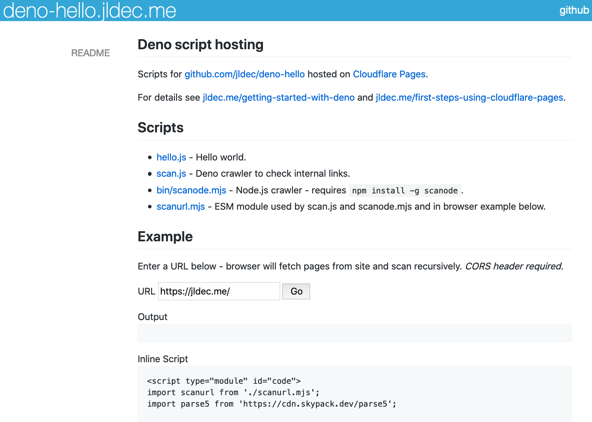

This is another followup to my recent post about Getting Started with Deno.
I thought it would make sense extract the crawler code into its own ESM module so that it can be used with Node.js or in the browser -- in other words -- not just from Deno.
The resulting API is ugly because it expects fetch and parse5 as parameters, but it does work.
/**
* @param {URL} rootURL
* @param {boolean} noRecurse
* @param {boolean} quiet
* @param {function} parse5
* @param {function} fetch - native or npm package
* @param {Object} fetchOpts options passed to fetch - optional
* @returns {Object} map of url -> { url, status, in, [error] }
*/
export default async function scanurl(rootURL, noRecurse, quiet, parse5, fetch, fetchOpts) {
Calling the ESM module from the browser
You can try running the module from inside your own browser at https://deno-hello.jldec.me/.

The page also shows how the module is used from the inline script tag.
Note that the usual browser CORS restrictions also apply to loading ESM modules, and to making fetch API calls.
Using the scanode ESM module with Node
I have published scanode as a package on npm. If you have Node, you can run it with 'npx' or install it using 'npm install'.
$ npx scanode http://jldec.me
npx: installed 3 in 0.987s
parsing /
...
14 pages scanned.
🎉 no broken links found.
You can also call the module API from your own code as in node_example/test-scan.js. Notice the imports for 'parse5' and 'node-fetch'.
import fetch from 'node-fetch';
import parse5 from 'parse5';
import scanode from 'scanode';
const result = await scanode(
new URL('https://jldec.me'),
false, // noRecurse
false, // quiet
parse5,
fetch
);
console.log(Object.values(result));
So what's wrong with this picture?
As discussed before, the npm ecosystem predates ESM modules, so the two worlds don't play very nicely together. Node.js programs cannot easily load ESM modules which are not in npm. Meanwhile, browsers know nothing about package.json.
The result is that modules which depend on other modules are not portable between the two worlds, without an additional transformation step, or maybe an import map.
This is why, for now, the API above expects the parse5 module dependency as a parameter.
But, where there's a problem, there's an opportunity!
🚀
powered by pub-server and pub-theme-pubblog